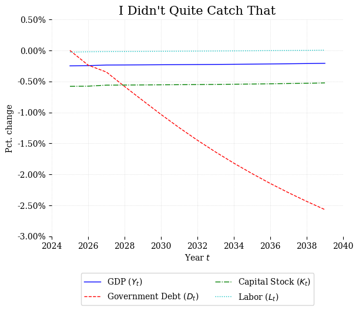
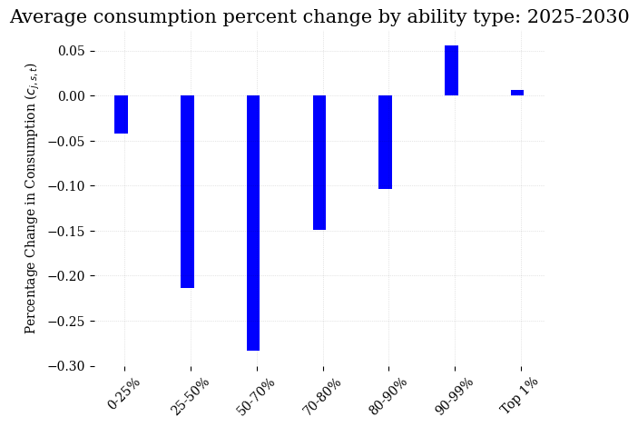
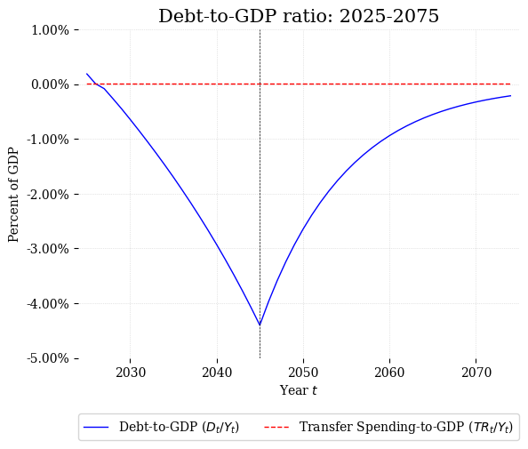
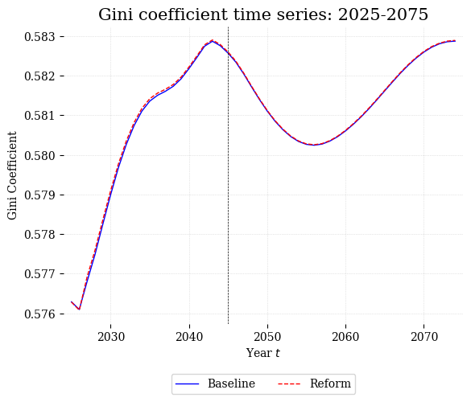

Using Built-in Functions in OG-Core#
# Import packages
import numpy as np
import pandas as pd
import os
import json
import pickle
from ogcore.parameters import Specifications
from ogcore.execute import runner
import ogcore.output_plots as op
import ogcore.output_tables as ot
import ogcore.demographics as demog
from ogcore.utils import safe_read_pickle
import multiprocessing
from distributed import Client
import matplotlib.pyplot as plt
# set plot style
plt.style.use("ogcore.OGcorePlots")
# Load baseline and reform parameters, steady-state, and transition path
# objects
base_path = (
"/Users/richardevans/Docs/Economics/OSE/OG/OG-ZAF/examples/" +
"OG-ZAF-Example/OUTPUT_BASELINE"
)
ref_path = (
"/Users/richardevans/Docs/Economics/OSE/OG/OG-ZAF/examples/" +
"OG-ZAF-Example/OUTPUT_REFORM"
)
p_bas = pickle.load(open(os.path.join(base_path, "model_params.pkl"), "rb"))
p_ref = pickle.load(open(os.path.join(ref_path, "model_params.pkl"), "rb"))
ss_vars_bas = pickle.load(
open(os.path.join(base_path, "SS", "SS_vars.pkl"), "rb")
)
ss_vars_ref = pickle.load(
open(os.path.join(ref_path, "SS", "SS_vars.pkl"), "rb")
)
tpi_vars_bas = pickle.load(
open(os.path.join(base_path, "TPI", "TPI_vars.pkl"), "rb")
)
tpi_vars_ref = pickle.load(
open(os.path.join(ref_path, "TPI", "TPI_vars.pkl"), "rb")
)
---------------------------------------------------------------------------
FileNotFoundError Traceback (most recent call last)
Cell In[2], line 11
3 base_path = (
4 "/Users/richardevans/Docs/Economics/OSE/OG/OG-ZAF/examples/" +
5 "OG-ZAF-Example/OUTPUT_BASELINE"
6 )
7 ref_path = (
8 "/Users/richardevans/Docs/Economics/OSE/OG/OG-ZAF/examples/" +
9 "OG-ZAF-Example/OUTPUT_REFORM"
10 )
---> 11 p_bas = pickle.load(open(os.path.join(base_path, "model_params.pkl"), "rb"))
12 p_ref = pickle.load(open(os.path.join(ref_path, "model_params.pkl"), "rb"))
13 ss_vars_bas = pickle.load(
14 open(os.path.join(base_path, "SS", "SS_vars.pkl"), "rb")
15 )
File ~/miniconda3/envs/ogzaf-dev/lib/python3.12/site-packages/IPython/core/interactiveshell.py:325, in _modified_open(file, *args, **kwargs)
318 if file in {0, 1, 2}:
319 raise ValueError(
320 f"IPython won't let you open fd={file} by default "
321 "as it is likely to crash IPython. If you know what you are doing, "
322 "you can use builtins' open."
323 )
--> 325 return io_open(file, *args, **kwargs)
FileNotFoundError: [Errno 2] No such file or directory: '/Users/richardevans/Docs/Economics/OSE/OG/OG-ZAF/examples/OG-ZAF-Example/OUTPUT_BASELINE/model_params.pkl'
1. Output_plots.py#
Let’s look at the ogcore/output_plots.py module. We have imported this module above with the import ogcore.output_plots as op line.
The input arguments for the plot_aggregates() function can be found in the Python API documentation for OG-Core.
plot_aggregates(
base_tpi,
base_params,
reform_tpi=None,
reform_params=None,
var_list=["Y", "C", "K", "L"],
plot_type="pct_diff",
stationarized=True,
num_years_to_plot=50,
start_year=DEFAULT_START_YEAR,
forecast_data=None,
forecast_units=None,
vertical_line_years=None,
plot_title=None,
path=None,
)
fig1 = op.plot_aggregates(
tpi_vars_bas, p_bas, tpi_vars_ref, p_ref, var_list=["Y", "D", "K", "L"],
plot_type="pct_diff", num_years_to_plot=15,
vertical_line_years=[p_bas.start_year + p_bas.tG1, p_bas.start_year + p_bas.tG2],
plot_title="I Didn't Quite Catch That"
)

The ability_bar() plot shows percentage change in variables in the first number of years.
ability_bar(
base_tpi,
base_params,
reform_tpi,
reform_params,
var="n_mat",
num_years=5,
start_year=DEFAULT_START_YEAR,
plot_title=None,
path=None,
)
The variable var= input needs to be one of the variables in the TPI object that varies by ability (e.g., bmat_splus1, bmat_s, n_mat, c_path, bq_path, rm_path, tr_path)
tpi_vars_bas.keys()
fig2 = op.ability_bar(
tpi_vars_bas, p_bas, tpi_vars_ref, p_ref, var="c_path", num_years=5,
start_year=p_bas.start_year+5,
plot_title="Average consumption percent change by ability type: 2025-2030"
)

The other main plotting function plot_gdp_ratio() is for plotting variables as a percent of GDP.
plot_gdp_ratio(
base_tpi,
base_params,
reform_tpi=None,
reform_params=None,
var_list=["D"],
plot_type="levels",
num_years_to_plot=50,
start_year=DEFAULT_START_YEAR,
vertical_line_years=None,
plot_title=None,
path=None,
)
fig3 = op.plot_gdp_ratio(
tpi_vars_bas, p_bas, tpi_vars_ref, p_ref, var_list=["D", "TR"], num_years_to_plot=50,
start_year=p_bas.start_year, plot_type="diff",
vertical_line_years=[p_bas.start_year + p_bas.tG1, p_bas.start_year + p_bas.tG2],
plot_title="Debt-to-GDP ratio: 2025-2075"
)

Inequality time series plot inequality_plot()
inequality_plot(
base_tpi,
base_params,
reform_tpi=None,
reform_params=None,
var="c_path",
ineq_measure="gini",
pctiles=None,
plot_type="levels",
num_years_to_plot=50,
start_year=DEFAULT_START_YEAR,
vertical_line_years=None,
plot_title=None,
path=None,
)
fig4 = op.inequality_plot(
tpi_vars_bas, p_bas, tpi_vars_ref, p_ref, var="y_before_tax_mat",
ineq_measure="gini", plot_type="levels", num_years_to_plot=50,
start_year=p_bas.start_year,
vertical_line_years=[p_bas.start_year + p_bas.tG1, p_bas.start_year + p_bas.tG2],
plot_title="Gini coefficient time series: 2025-2075"
)

2. demographics.py#
fert_rates, fig = demog.get_fert(
totpers=100,
min_age=0,
max_age=99,
country_id="710", # South Africa is "710"; USA is "840"
start_year=2022,
end_year=2022,
graph=True,
plot_path=None,
download_path=None,
)
/opt/anaconda3/envs/ogzaf-dev/lib/python3.12/site-packages/ogcore/parameter_plots.py:417: UserWarning: FigureCanvasAgg is non-interactive, and thus cannot be shown
fig.show()
fert_rates, fig = demog.get_fert(
totpers=100,
min_age=0,
max_age=99,
country_id="840", # South Africa is "710"; USA is "840"
start_year=2022,
end_year=2022,
graph=True,
plot_path=None,
download_path=None,
)
/opt/anaconda3/envs/ogzaf-dev/lib/python3.12/site-packages/ogcore/parameter_plots.py:417: UserWarning: FigureCanvasAgg is non-interactive, and thus cannot be shown
fig.show()